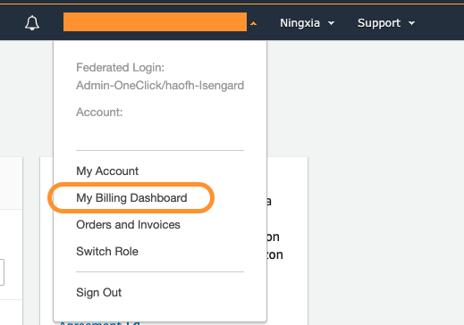
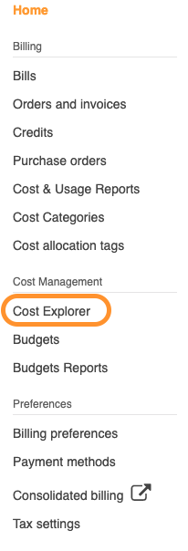
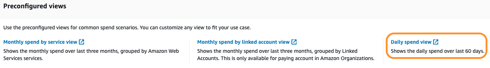
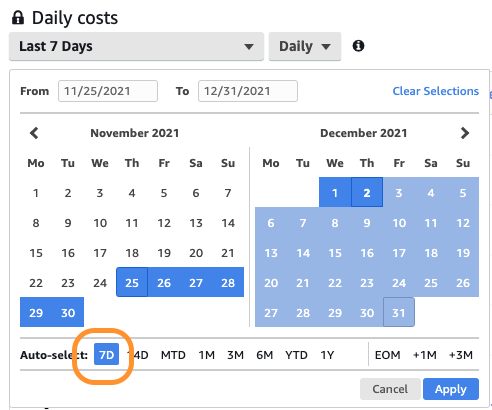
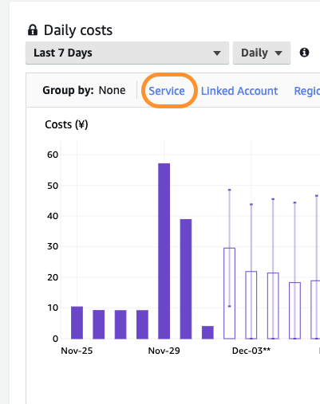
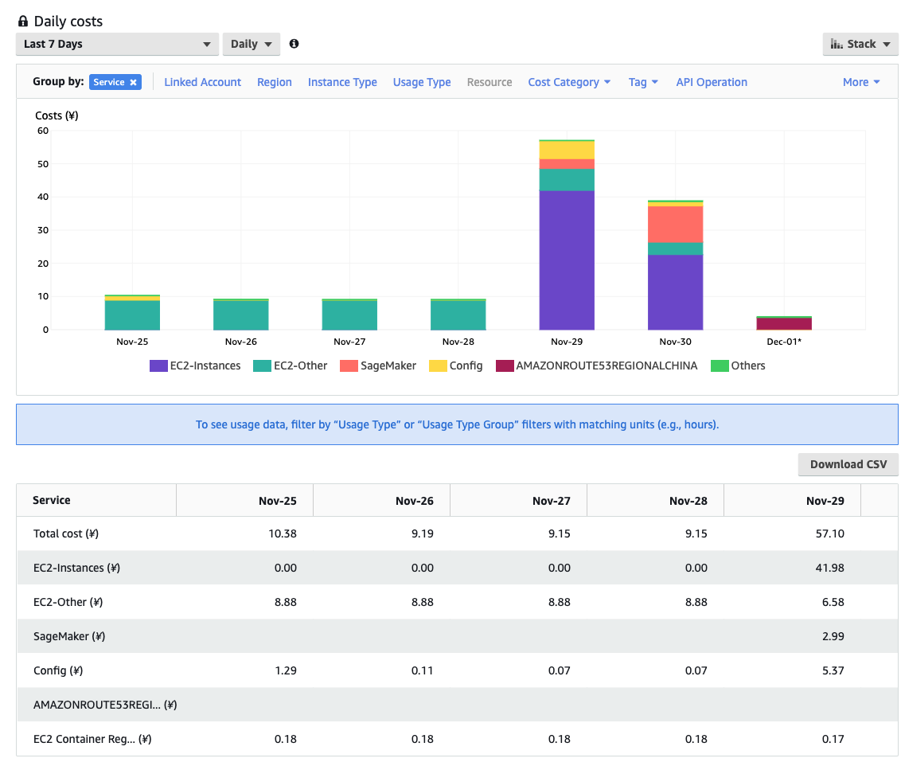

使用 Cost Explorer 查询日消费
当我们停止使用一个服务或者一个区域后，我们想确认是否安全的删除了所有的资源，避免收到额外的账单，这个时候可以通过 Cost Explorer 来查询日账单。
启用 Cost Explorer
进入控制台后，从右上角您的账户处，点击下拉菜单，进入账单页面。

在左边导航栏选择 Cost Explorer，第一次使用时，会提供您需要启用，24小时后开会生效。

查询日消费
选择日消费查询视图

选择查询区间，比如 7天。

选择按服务进行分组。

就可以看到截止到前一日的消费明细了。
